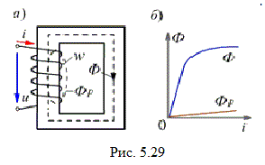
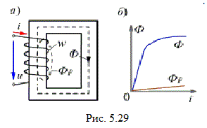
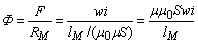

5.4.1.1. ћагнитный поток при синусоидальном напр€жении
¬ажнейшей частью вс€кой цепи переменного тока с ферромагнитными элементами €вл€ютс€ обмотки, расположенные на ферромагнитном магнитопроводе. онструкции магнитопроводов современных устройств переменного тока (трансформаторов, машин переменного тока, реле и др.) весьма разнообразны. Ќаиболее простой пример магнитной цепи переменного тока Ц это катушка со стальным сердечником (катушка со сталью).


ѕри подключении катушки с числом витков w, размещЄнной на ферромагнитном магнитопроводе (рис. 5.29а), к источнику переменного напр€жени€ u в ней протекает ток i, а ћƒ— F = wi катушки возбуждает магнитный поток, который удобно представить в виде двух составл€ющих:
• основного потока ‘, замыкающегос€ по ферромагнитному сердечнику и нелинейно зависимого от тока i (рис. 5.29б), так как
,
где µ = ƒ(‘);
• магнитного потока рассе€ни€ ‘p, замыкающегос€ в основном по воздуху вокруг витков w катушки и пропорционального току i, так как
 ,
,
где lpм и Sp – средн€€ длина м. c. л. и сечение магнитного потока рассе€ни€ соответственно.
ќбычно поток ‘p составл€ет всего несколько процентов от потока ‘. ќднако могут быть и такие режимы, в которых поток ‘p оказываетс€ соизмеримым с потоком ‘. “акие режимы имеют место, если магнитопровод работает при большом насыщении или когда в магнитопроводе имеетс€ относительно большой воздушный зазор.